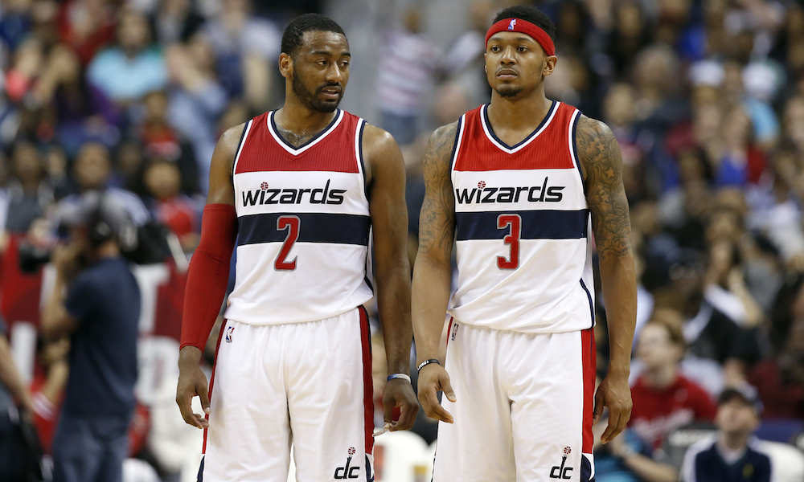
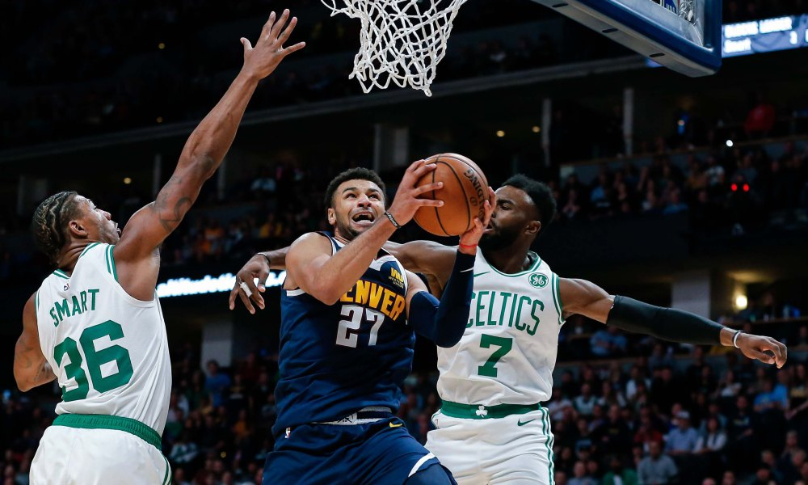

Game 1: Charlotte Hornets at Philadelphia 76ers
My Pick:
Philadelphia 76ers
Why I'm Rolling with them:
Philadelphia's success will hinge solely on Embiid. The 76er's have been getting outscored by 10.5 points per 100 when he's off, and the MVP cantidate is putting up obsence averages of 28/12. Charlotte has had a great offense to start the season, and that's because their point guards have been thriving in the system. Kemba is scoring in bunches, but I think he'll have trouble with this longer Philadelphia defense. I want to see Markelle get more agressive against Charlotte's guards. Sixers, 117-107.
Game 2: Washington Wizards at Orlando Magic
My Pick:
Orlando Magic
Why I'm Rolling with them:
Honestly this game could go either way. Theoretically the Wizards should be by far the better team. Orlando has a backup PG starting and a G-League PG playing backup. Their entire roster could play center, and Dwight can still outrebound most of them. But that's not the way this Wizards team operates. Multiple times this season I've seen them lay a giant goose egg against far weaker teams. Orlando pulled out a win against a good Spurs team recently, and I'm excited to see if Ross's speech helped Orlando's bench. Orlando wins it, 114-108.
 The Wizards backcourt needs to step it upGame 3: Detroit Pistons at Atlanta Hawks
My Pick:
Detroit Pistons
Why I'm Rolling with them:
The Atlanta Hawks have had their ups and downs, with Trae Young becoming more confident of a facilitator as time goes on. However, the Hawks don't really have anyone to deal with the large frontcourt of the Detroit Pistons. I think Detroit's shooting will come back from their terrible average on wide open threes, and if there's a game to do it it could be against this Atlanta defense. I'm expecting big things from Detroit tonight as they win 119-105.
Game 4: Indiana Pacers at Miami Heat
My Pick:
Indiana Pacers
Why I'm Rolling with them:
The Pacers have steadily been one of the best teams in the league so far this year, and look to continue that against Miami. Both of these teams are very solid, and Richardson vs Oladipo will be a hard-fought battle. I give the edge to Oladipo, he's a better scorer and a significantly better defender. His ability to carry this Indiana team onwards is the only reason they've picked up some wins against some very good teams lately, and I'm excited to see him keep going with that. Pacers 112-106.
Game 5: Brooklyn Nets at Denver Nuggets
My Pick:
Denver Nuggets
Why I'm Rolling with them:
Jokic needs to learn to shoot more frequently. His only shot in a game shouldn't be a last second prayer to win the game, and he's at his best when he's a threat to pass or score. The Nuggets lost an easily winnable game against Memphis two nights ago, and if Jokic plays like that again tonight the same thing could happen. But, he won't. He's an all-star and will bounce back as such, leading the Nuggets to an easy win over Brooklyn, 117-108.
 Murray just had his career game against the CelticsGame 6: Boston Celtics at Utah Jazz
My Pick:
Utah Jazz
Why I'm Rolling with them:
Boston just won a close one against Phoenix last night, that saw them climb back in regulation before pulling away in overtime. Irving was the sole reason for that, and it will be interesting to see how this Boston team can produce offensively without Kyrie to score for them. Their offense has been awful to start the season, especially based on the sheer amount of talent they have. Tatum is settling for too many shots, and that's really hurting them. Utah wins, 109-102.
Game 7: Minnesota Timberwolves at Sacramento Kings
My Pick:
Sacramento Kings
Why I'm Rolling with them:
This one may come as an out there pick, but I watched Sacramento play really well against the Raptors on Wednesday, a much better team than this Timberwolves Squad. If they did a little better on the boards, they could have had it. This Timberwolves squad can't be counted on to play consistently, and I'm counting on Fox and Rose to have a good game, with Fox getting the edge because I think he's just a little bit better of a defender. Sacramento will win this one 123-117.